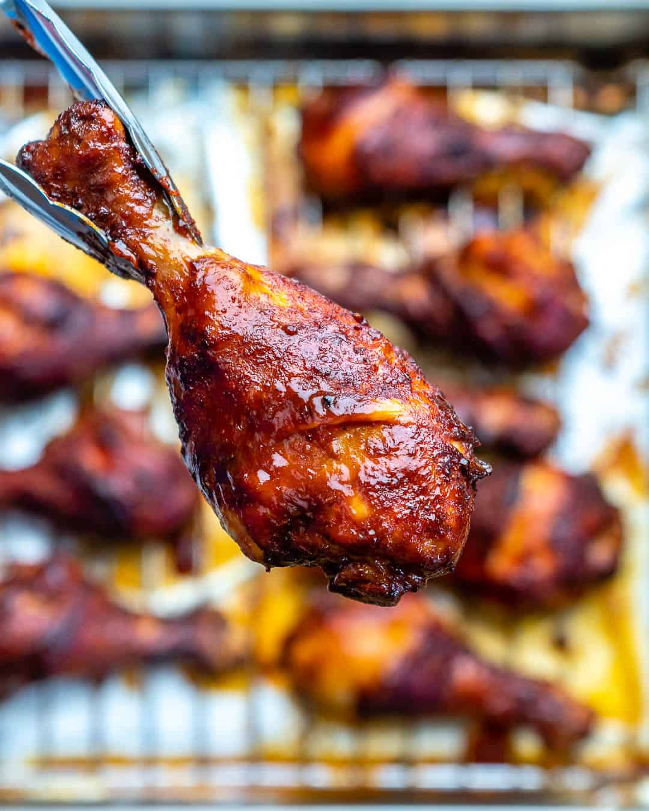

Baked BBQ Chicken Drumsticks
By Rena Awada from Healthy Fitness Meals

Description
These baked chicken drumsticks are crispy on the outside and tender on the inside, made with a sweet and tangy BBQ sauce. Makes around 6 servings.
Ingredients
- 4 lbs chicken drumsticks (around 12 drumsticks)
- 2 tbsp garlic powder
- 2 tbsp onion powder
- 2 tbsp chili powder or cayenne powder
- 1 tbsp ground ginger
- 2 tsp salt
- 1 tsp black pepper
- 2 cups BBQ sauce
Steps
- In a bowl, add drumsticks and all the spices. Using your clean or gloved hands, rub the seasoning all over the drumsticks.
- Let the drumsticks sit in the fridge for 30 minutes to overnight (optional).
- Preheat the oven to 350 degrees Fahrenheit.
- Line a rimmed baking sheet with aluminum foil and place a wire rack on top.
- Transfer the drumsticks onto the wire rack, spacing them apart as much as possible.
- Bake in the middle of the oven for 40 minutes, flipping halfway through if desired.
- Remove from the oven and brush each drumstick with BBQ sauce. Return to the oven and bake for 10 minutes or broil on high until crisp, flipping halfway through.
- Remove and serve immediately, with some BBQ sauce on the side if desired.
Link to original recipe
Back to Home